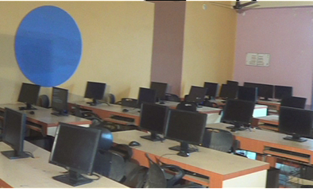

| _1)Internet Technology Lab.
The basic objective of this laboratory
is to perform networking and
database practical.
|
 |
| 2)Open source Lab.
This Laboratory provides platform to students open source operating systen and basic software like gcc compiler and java avilabale for conduction of practical.
|
 |
| 3)Advanced Software Lab.
The basic objective of this labratory is
to develop academic project by using various open sources software.
|
|
_4)Digital Electronic and Comm. Engg. lab.
The basic objective of this lab is to perform
microprocessor and microcontroller based and
electronics based practical.
|
|
_5)Hardware lab.
The basic objective of this lab is to teach
the fundamentals of design tecgniques and construct various Embedded Application from Industry Point of view.
|
|